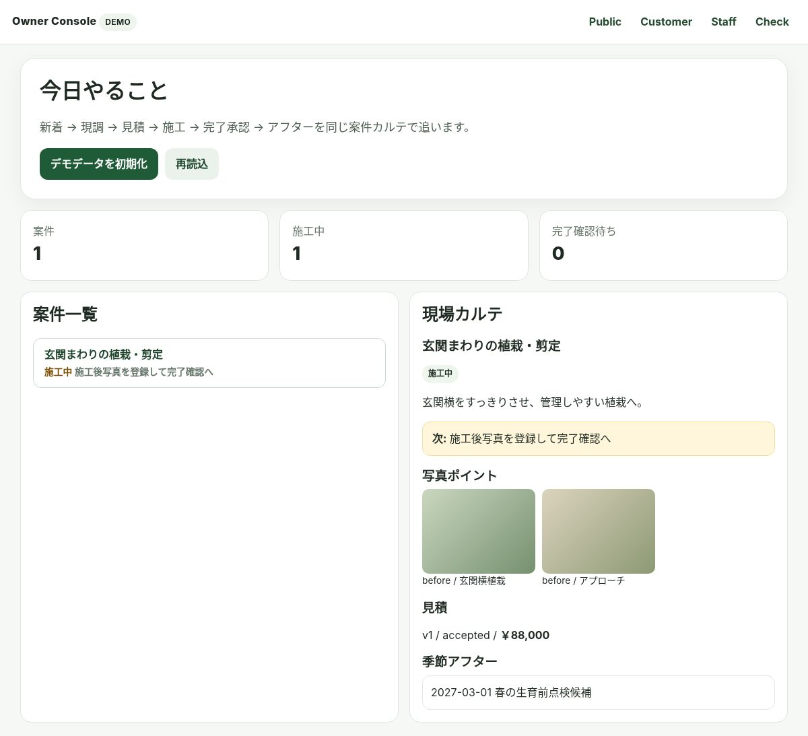

P1 / FIRST VIEW
写真で始まり、
現調・見積・施工・完了まで。
造園・外構の「どの場所を、どう変えるか」を写真ポイントでつなぐ。相談、現調、施工前後、完了承認までを一つの現場カルテへ。

P2 / OWNER PAIN
写真・見積・予定が、人ごとに分かれていませんか？
写真を探す
LINE、スマホ、共有フォルダから施工写真を探し直す。
次の作業が見えない
現調・見積・施工・完了承認の待ち状態が分散する。
前回を追い直す
再依頼時に過去写真や工事内容を一から確認する。
P3 / WHY PROBLEM
「案件」だけでは、施工箇所の変化が残りにくい。
造園・外構は同じ敷地でも、庭木・玄関・フェンス・アプローチなど確認する場所が複数あります。DPROは施工箇所ごとの写真ポイントで、相談からAfterまでを追えるようにします。
P4 / CONNECTED SYSTEM
入口は自由。管理は、ひとつ。
WEB / LINE / 電話・窓口
確認済みの入口から相談受付
→
DPRO SYSTEM
案件・写真・現調・見積・予定
→
ONE MANAGEMENT HUB
Owner / Staff / Customerで権限を分けて確認
P5 / CUSTOMER EXPERIENCE
お客様は、自分の案件だけを分かりやすく。
相談内容
案件と写真を確認。
見積・予定
必要な確認を一つの導線へ。
Before → After
施工前後を見て完了承認。
P6 / OWNER & STAFF EXPERIENCE
管理する人と、現場で動く人の画面を分ける。
Owner
案件全体、現調、見積、施工予定、完了、アフター候補を管理。
Staff
担当案件を確認し、写真・作業記録・完了提出を現場から操作。
P7 / BEFORE AFTER
「どこを、どう変えたか」が残る。
BEFORE
相談写真・現調写真・見積根拠。
AFTER
必須写真を揃えて、Customerへ完了確認。
P8 / PRICE VALUE
3つまとめて、月額5,500円。
LINE・ホームページ・DPROの基本運用
LINE運用 3,300円 ＋ ホームページ運用 1,100円 ＋ DPRO利用・保守 1,100円
ホームページ運用とDPRO利用・保守はLINE運用契約店舗向けの基本構成。個別制作・追加作業は別途案内。
月額合計（税込）
5,500円
5,500円
P9 / DEMO - CURRENT REAL SCREEN
実際のOwner画面を、そのまま確認。
架空のモックではなく、現在の造園・外構デモのOwner画面を使用しています。

P10 / CONSULT CTA
今の受付から完了まで、まず並べてみませんか？
現場の流れを確認し、DPROをどこへ合わせるかをご案内します。